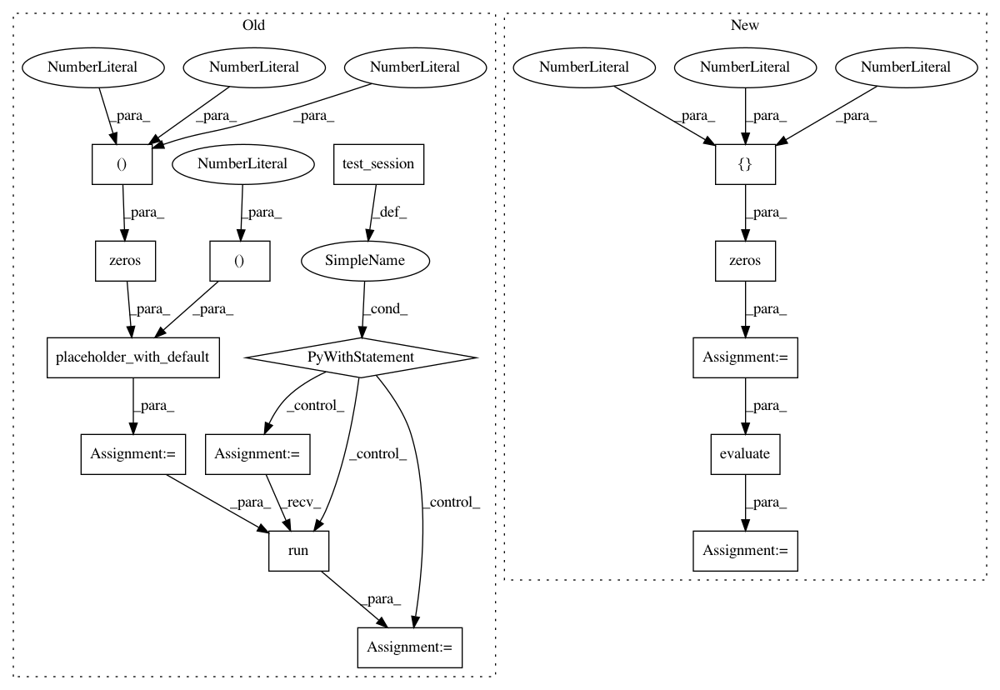

b75afe4c64513011d4a76ffab8e9bbed6ec00919,opennmt/tests/position_test.py,PositionTest,testApplyPositionEncoding,#PositionTest#,42
Before Change
def testApplyPositionEncoding(self):
encoder = _DummyPositionEncoder()
sequence_length = tf.constant([2, 3])
inputs = tf.placeholder_with_default(np.zeros((2, 4, 3)), shape=(None, None, 3))
outputs = encoder.apply(inputs, sequence_length=sequence_length)
with self.test_session() as sess:
outputs = sess.run(outputs)
self.assertAllEqual(outputs, [
[[1, 1, 1], [2, 2, 2], [3, 3, 3], [4, 4, 4]],
[[1, 1, 1], [2, 2, 2], [3, 3, 3], [4, 4, 4]]
])
def testApplyPositionEncodingWithoutSequenceLength(self):
encoder = _DummyPositionEncoder()
inputs = tf.placeholder_with_default(np.zeros((2, 4, 3)), shape=(None, None, 3))
outputs = encoder.apply(inputs)
After Change
def testApplyPositionEncoding(self):
encoder = _DummyPositionEncoder()
sequence_length = tf.constant([2, 3])
inputs = tf.zeros([2, 4, 3])
outputs = encoder.apply(inputs, sequence_length=sequence_length)
outputs = self.evaluate(outputs)
self.assertAllEqual(outputs, [
[[1, 1, 1], [2, 2, 2], [3, 3, 3], [4, 4, 4]],
[[1, 1, 1], [2, 2, 2], [3, 3, 3], [4, 4, 4]]
])
In pattern: SUPERPATTERN
Frequency: 3
Non-data size: 15
Instances
Project Name: OpenNMT/OpenNMT-tf
Commit Name: b75afe4c64513011d4a76ffab8e9bbed6ec00919
Time: 2019-02-12
Author: guillaume.klein@systrangroup.com
File Name: opennmt/tests/position_test.py
Class Name: PositionTest
Method Name: testApplyPositionEncoding
Project Name: OpenNMT/OpenNMT-tf
Commit Name: b75afe4c64513011d4a76ffab8e9bbed6ec00919
Time: 2019-02-12
Author: guillaume.klein@systrangroup.com
File Name: opennmt/tests/position_test.py
Class Name: PositionTest
Method Name: testApplyPositionEncodingWithoutSequenceLength
Project Name: OpenNMT/OpenNMT-tf
Commit Name: b75afe4c64513011d4a76ffab8e9bbed6ec00919
Time: 2019-02-12
Author: guillaume.klein@systrangroup.com
File Name: opennmt/tests/position_test.py
Class Name: PositionTest
Method Name: testApplyOneEncoding